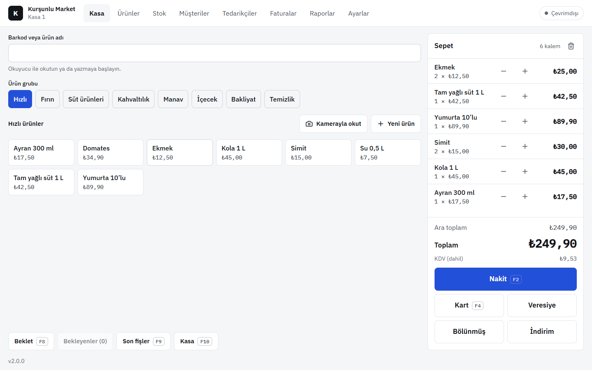
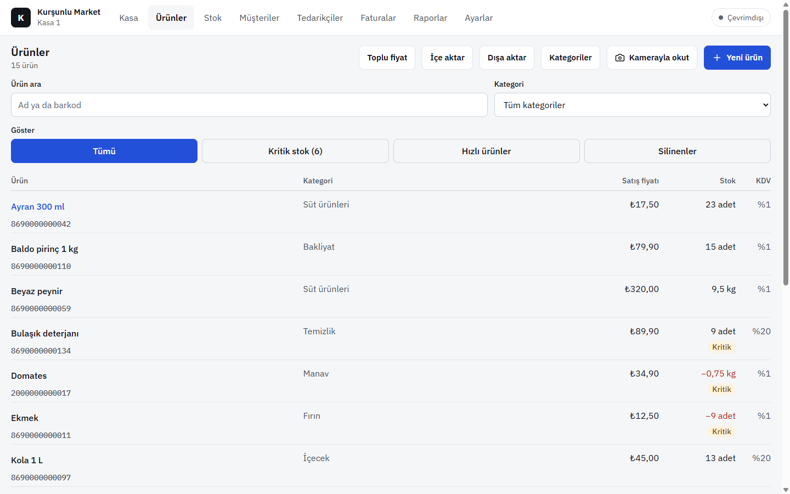
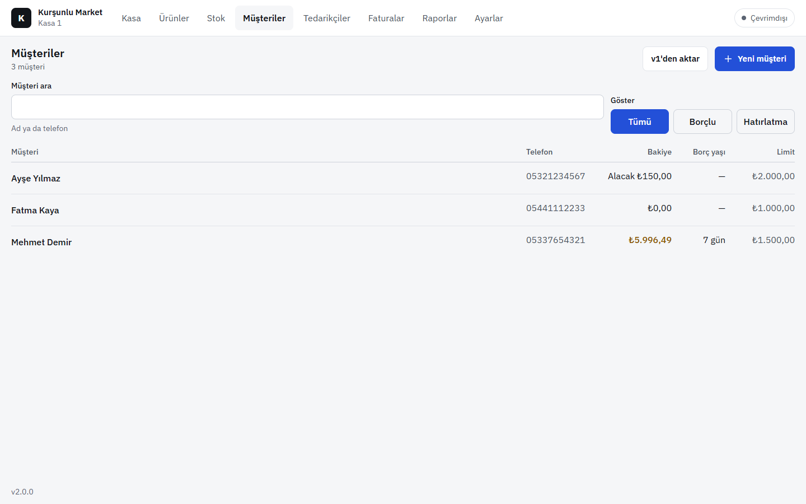
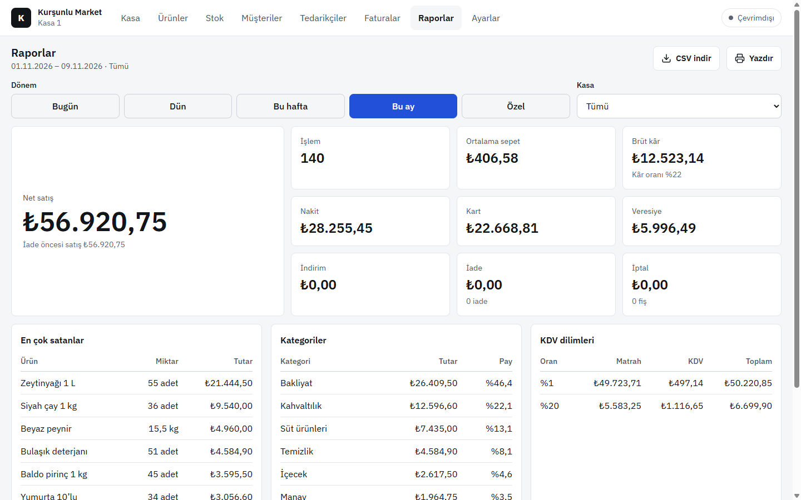
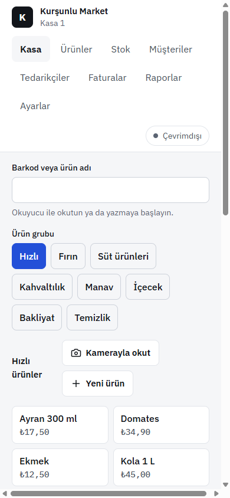

Windows
Kasa bilgisayarı için. Yazıcıya doğrudan fiş basar.
Kurulumu indir (.exe)“Bilgisayarınız korundu” uyarısında Ek bilgi → Yine de çalıştır. Yeni sürümler Ayarlar → Güncelleme'den tek tuşla gelir.
Sürüm 2.0 · Kurşunlu Market'te kullanılıyor
Barkodu okut, sat, veresiyeyi yaz. Market Kasa satışı önce cihaza kaydeder, internet gelince diğer kasalara gönderir. Bilgisayar, telefon ve tarayıcı aynı marketi görür.
Ücretsiz deneme · Kurulum 2 dakika · Türkçe

Sade ekranlar, büyük düğmeler, klavye kısayolları. Kasiyer ilk gün öğrenir.
USB okuyucu ya da telefon kamerasıyla barkod, hızlı ürün düğmeleri, F2 nakit, F4 kart. Bölünmüş ödeme ve indirim tek dokunuşta.
Müşteri limiti, borç yaşı, tahsilat ve ekstre. Borçlulara WhatsApp'tan hatırlatma.
Mal kabulde yeni fiyatlar, raf sayımında fark kaydı, kritik stok listesi. Stok her hareketten hesaplanır, kaybolmaz.
Günlük, haftalık, aylık satış; nakit, kart, veresiye dağılımı; en çok satanlar; sayımlı Z raporu.
Herkes kendi PIN'iyle girer. İptal, iade ve indirim gibi işlemler yetkili onayı ister; her değişiklik iz kaydına düşer.
Ürün listesini Excel ya da CSV'den önizleyerek alın. Eski programın yedeğinden ürünler ve veresiye borçları gelir.



Market Kasa'yı açın, Ayarlar → Bu kasa → Sunucuya bağla. Market sahibi “Kod üret” ile bir kez giriş yapar; 8 harflik bir kod çıkar.
Android uygulamasını kurun ya da tarayıcıda açıp ana ekrana ekleyin. Aynı yerden kodu girin, kasaya bir ad verin (K2, K3…).
Bir kasada yapılan satış, stok ve veresiye diğerlerinde de görünür. İnternet kesilirse satış sürer; gelince kendiliğinden eşitlenir.
Şifre telefonda ya da kasada saklanmaz. Kaybolan bir cihazı sahip kapatabilir.

Kasa bilgisayarı için. Yazıcıya doğrudan fiş basar.
Kurulumu indir (.exe)“Bilgisayarınız korundu” uyarısında Ek bilgi → Yine de çalıştır. Yeni sürümler Ayarlar → Güncelleme'den tek tuşla gelir.
Reyonda sayım, kasada ikinci ekran ya da cepte rapor.
Uygulamayı indir (.apk)Telefon sorarsa bu kaynaktan yüklemeye izin verin. Yeni sürüm eskisinin üstüne kurulur, veriler kalır.
iPhone, iPad ya da herhangi bir bilgisayar. Kurulum yok.
Market Kasa'yı açChrome'da “Yükle”, Safari'de “Ana Ekrana Ekle” ile uygulama gibi açılır ve internetsiz de çalışır.
Satış, iade, veresiye ve stok çalışmaya devam eder. Her işlem önce cihaza yazılır; ekranın sağ üstünde kaç işlemin beklediği görünür. İnternet gelince hepsi gönderilir, diğer kasaların işlemleri de iner.
Her cihazda bir kopyası, bir de marketin sunucusunda. Her market yalnız kendi verisini görür; sunucu her isteği kimin yaptığını denetler.
Fişten e-Arşiv faturası istenebilir ve sıraya alınır. Fatura sağlayıcısı bağlantısı yakında; o zamana kadar istekler “beklemede” görünür.
Eski programda Ayarlar → Yedek İndir (JSON). Market Kasa'da Ürünler → İçe aktar ve Müşteriler → v1'den aktar ile ürünler, stok ve veresiye borçları gelir.
Windows'ta Ayarlar → Güncelleme'de “Güncelle” düğmesi çıkar; basınca indirilir ve kurulur. Android'de aynı yerde yeni sürümün indirme bağlantısı görünür. Tarayıcı sürümü kendini günceller.